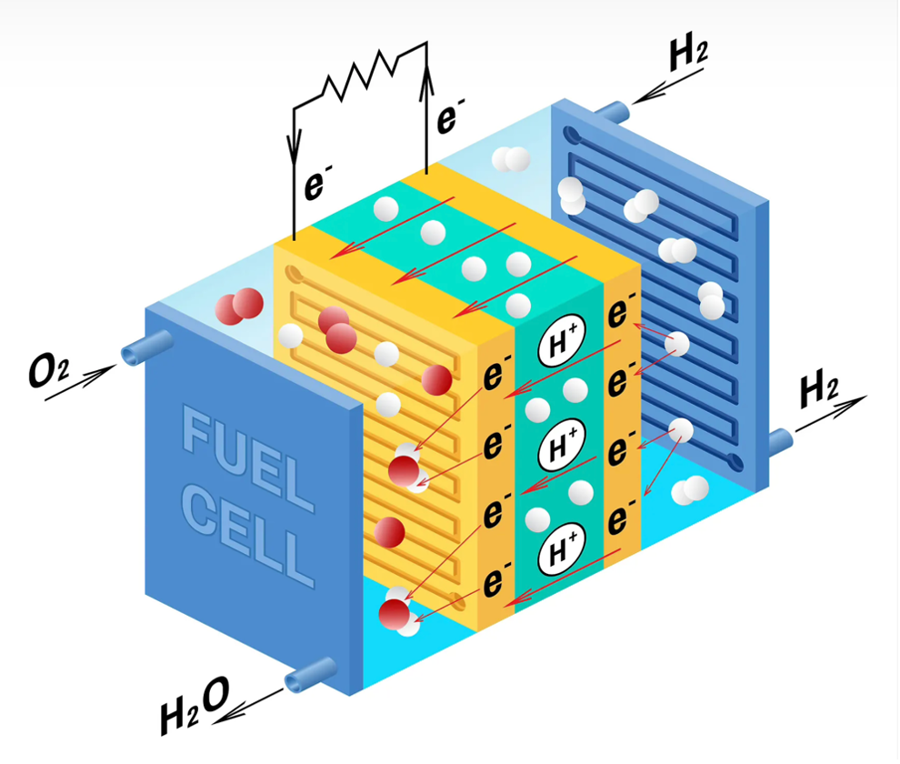
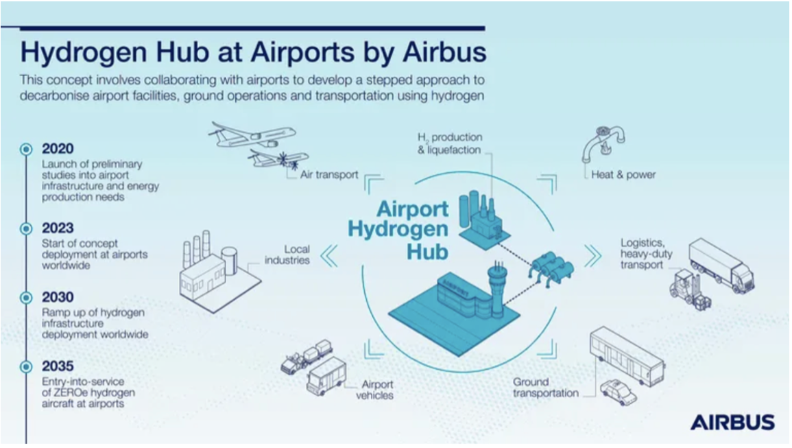

Modern day aircraft use jet fuels to power engines and systems aboard aircraft. Whilst innovation in aircraft moves forward, one area remains stuck in the past, with this being the fuel to power them. Hydrogen fuel cells are being investigated as a potential successor/alternate method of propulsion for aircraft to reduce the effect of emissions on the atmosphere. Fuel cell technologies have been developing in the past years and are being tested on smaller aircraft to examine the capabilities. The price of utilising fuel cells can impact usage as well as infrastructure constraints. In this article, I will be weighing up the benefits and downsides including any factors which could be considered a hinderance to the development of this technology.
Jet fuel is the most used means of propulsion for aircraft across the world. This is mainly due to aircraft solely accepting a specific type of jet fuel (such as Jet A, Jet B, Jet-A1 and others) (Shell, n.d.). Jet fuel is highly polluting and accounts for 2.5% of global emissions by emitting one of the major polluters – carbon dioxide. This figure is only meant to grow from here and by 2050, fuel use will rise by 59%, more than doubling the current rate of use (Reuters, 2025). This highly polluting substance coupled with a drastic increase in air travel (specifically 7.3% rise in the UK and upwards trends across the world) (IATA, 2025) leads to a worsening state for the climate. To address these issues, researchers and aircraft manufacturing companies are looking into the prospect of utilising hydrogen fuel cells to be the future of aviation.
Hydrogen fuel cells are devices that convert energy stored in molecules (from the hydrogen) into electricity through an electrochemical reaction. The concept is that liquid hydrogen is added into the aircraft to make it easier to transport and store. This is converted into electricity to power electric engines on the aircraft which in turn would provide a benefit of reducing emissions without having the inconvenience of directly recharging the battery. The cells are comprised of two electrodes (anode and cathode) and separated by an electrolyte membrane. The hydrogen atom is broken down into positive and negative molecules which can then be used as electricity with water as a waste byproduct (Airbus, 2020). This means they have minimal emissions and zero air pollutants, which can better improve air quality and reduce the effects of climate change around the world (U.S. Department of Energy, n.d.).
Airbus, Hydrogen Fuel Cells Explained, 2020
Hydrogen fuel cells can be compared to jet fuels in certain ways, yet some significant differences still occur between the sources. Hydrogen fuel cell powered aircraft can easily be refuelled as hydrogen is a liquid, much like jet fuel, which would enable quick and easy refuelling. (Airbus, 2020). Whilst hydrogen is a highly abundant element, contributing to 75% of the mass of the universe (National Grid, 2023), it is not sourced and manufactured in high enough quantities to support the current energy demands of aircraft around the world. It is estimated around ~4.5 million barrels of jet fuel is used per day across the world (value from 2020) showing the vast scale hydrogen production would have to reach to sustain the world’s demands (Bloomberg, 2020).
Additionally, storage for the large amounts of hydrogen would be required. Hydrogen would have to be stored differently when compared to jet fuels. This change would require co-operation from airports, airlines, aircraft manufacturers and local entities to support the shift. Companies such as Airbus are attempting a push in the field by setting out a long-term plan to introduce hydrogen aircraft into the market by improving infrastructure to support them across many areas of the world. This involves providing hydrogen generation, storage, logistics and transportation (Airbus , 2021)
Airbus, ZEROe Low Carbon Aviation, 2021
It cannot go without mentioning the complete renewal of aircraft fleets that would be required for this massive shift to hydrogen. Components such as hydrogen storage tanks, battery systems, electric motors and altered engines would all be necessary in aircraft to utilise hydrogen (ZeroAvia, n.d.). This could prove to be one of the largest hurdles to overcome when upgrading to a new propulsion fuel. The cost of this could reach into the trillions of dollars and take an extremely long time to achieve.
As hydrogen technology is utilised heavily across the world, benefits would be seen in the improvement of climate health and the reduction of aviation’s climate impact. The effect on passengers will be greater at the beginning with higher ticket prices as factors of production are more expensive. This would be an estimated 8% increase compared to current prices. On the other hand, as the technology becomes more widespread across the world, factors of production costs would decrease and in turn result in lower costs per passengers and can become 2% cheaper to operate (Transport Environment, 2023).
Hydrogen fuel cells are an exciting breakthrough in research and currently being tested on airframes. They provide a strong competition to jet fuels in an ideal world where every resource is provided to them. Hydrogen fuel cells can be a convincing way forward for the industry in the future, based around a focus on reducing climate emissions across the industry whilst maintaining the ‘ease’ of using jet fuels. Lower operational costs in the future can be enticing to both airlines and passengers which would benefit from the lower airfares. Hydrogen fuel cells are being planned to roll out gradually around the world and eventually phase out jet fuels (IATA, n.d.) which shows the serious consideration the industry is taking into improving emissions. This leaves hydrogen fuel cells as a strong contender to propel the future of aviation.